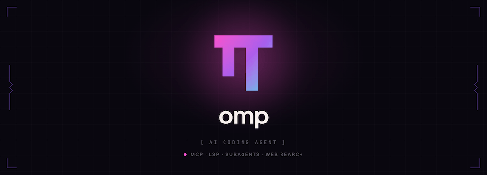

Oh My Pi (omp) Tutorial de introducción
Oh My Pi (abreviado omp en la línea de comandos) es un agente de programación con IA de código abierto que se ejecuta en la terminal, un fork del Pi de Mario Zechner realizado por Can Bölük y ampliado en gran medida.
El concepto central de Oh My Pi es:Las herramientas no deberían limitarse a "conectarse", sino que deben pulirse hasta el extremo.—Cada herramienta está ajustada mediante pruebas comparativas; la precisión de edición, la velocidad de búsqueda y la integración LSP buscan ser las mejores de su clase.
-
Sitio web oficial:omp.sh

¿Qué es omp?
omp es unterminal-firstagente de programación con IA. No depende de ningún IDE; se ejecuta como una TUI con todas las funciones en tu terminal, e integra LSP, depuradores DAP, núcleos de ejecución duales de Python/JavaScript, subagentes en paralelo, memoria entre sesiones y un conjunto de 32 herramientas ajustadas mediante pruebas comparativas.
Diferencias con otras herramientas de programación con IA
| Dimensión | Claude Code / herramientas similares | omp |
|---|---|---|
| Formato de edición | str_replace (propenso a errores) | Hashline (anclas de hash de contenido, resistente a diferencias de espacios en blanco) |
| Lectura de archivos | volcado completo del texto | resumen de estructura + expansión bajo demanda |
| LSP | Ninguna o limitada | 14 operaciones LSP completas (incluyen renombrar, ir a definición, acciones de código) |
| Depurador | 无 | DAP completo: lldb, dlv, debugpy |
| Subagentes | Ninguno o limitado | Subagentes en paralelo, espacios de trabajo aislados, valores de retorno tipados |
| Búsqueda | invocación de ripgrep desde shell | ripgrep en proceso, sin fork/exec |
| Corrección de comportamiento | mediante prompt | Reglas de flujo: coincidencia de regex → inyección mid-token → reintento |
| Memoria entre sesiones | 无 | banco de memoria Hindsight (a nivel de proyecto) |
| Ejecución de código | Python sandbox | núcleos duales persistentes de Python + Bun, que pueden invocar las herramientas del Agent entre sí |
| Pila tecnológica | JS/Python puro | ~55,000 líneas de núcleo Rust + TypeScript |
Instalación
Esta sección presenta varias formas de instalar omp en macOS, Linux y Windows.
macOS / Linux (recomendado)
$ curl -fsSL https://omp.sh/install | sh
El script de instalación detecta automáticamente si Bun está disponible: si hay Bun (≥ 1.3.14), instala con Bun de forma preferente; de lo contrario, descarga un binario precompilado.
Homebrew（macOS / Linux）
$ brew install can1357/tap/omp
Bun (recomendado, obtén la última versión)
$ bun install -g @oh-my-pi/pi-coding-agent
Windows（PowerShell）
$ irm https://omp.sh/install.ps1 | iex
Windows admite ejecución nativa, sin necesidad de WSL.
Fijación de versión (mise)
$ mise use -g github:can1357/oh-my-pi
Verificar la instalación
$ omp --version
Autocompletado de shell
omp genera dinámicamente scripts de autocompletado a partir de los metadatos de la CLI, por lo que los subcomandos, las flags y los valores de enumeración nunca se desincronizan de la CLI real:
# zsh（加入 ~/.zshrc） eval "$(omp completions zsh)" # bash（加入 ~/.bashrc） eval "$(omp completions bash)" # fish omp completions fish > ~/.config/fish/completions/omp.fish
Compilar desde el código fuente
$ git clone https://github.com/can1357/oh-my-pi $ cd oh-my-pi $ bun setup # 安装 Bun 工作区依赖并构建 Rust N-API 插件 $ bun dev # 启动开发版 CLI # 修改 Rust 代码后，重新构建原生插件 $ bun run build:native
Configuración inicial: iniciar sesión con el proveedor de modelos
Después de ejecutar omp por primera vez, usa /login o /model para configurar tu proveedor de IA.
Opción 1: inicio de sesión con OAuth en un clic (sin API Key)
omp admite el inicio de sesión con OAuth en varios proveedores; la forma más sencilla:
/login # 打开交互式提供商选择器
Los proveedores compatibles con OAuth incluyen: Anthropic, OpenAI Codex, Google Antigravity (Gemini), Perplexity, Cursor, GitHub Copilot, GitLab Duo, entre otros.
Opción 2: API Key (conexión directa al proveedor)
# 在环境变量里设置（推荐写入 ~/.zshrc 或 ~/.bashrc） export ANTHROPIC_API_KEY="sk-ant-xxxx" export OPENAI_API_KEY="sk-xxxx" export GOOGLE_API_KEY="xxxx"
O configúralo directamente en omp:
/model # 打开模型选择器，可以在这里配置 Key
Opción 3: suscripción a Coding Plan
Si ya estás suscrito a servicios como Cursor, GitHub Copilot, Kilo, Kimi Code, MiniMax Coding Plan, puedes enrutar directamente a tu suscripción:
/login # 选择对应的 Coding Plan 提供商，OAuth 授权
Opción 4: modelos locales (Ollama / LM Studio)
# 先启动 Ollama $ ollama serve # 在 omp 里选择 Ollama 提供商（key 可选） /model # 选择 Ollama，指向 http://localhost:11434
Ruta de configuración
Toda la configuración se almacena en el directorio ~/.omp/:
~/.omp/
agent/
settings.yml # 主配置文件
models.yml # 自定义模型/提供商
keybindings.yml # 快捷键绑定
rules/ # 流规则（stream rules）
skills/ # 技能文档
Primera conversación: operaciones básicas de la TUI
Esta sección presenta la interfaz TUI de pantalla completa de omp y los métodos básicos de interacción.
Iniciar omp
# 在项目目录下启动 $ cd ~/your-project $ omp
Después de iniciar omp, se entra en la TUI de pantalla completa (interfaz de usuario de terminal). Las llamadas a herramientas se representan como tarjetas y las operaciones de edición muestran una vista previa antes de guardarse en disco.
Nota: omp utiliza el protocolo de teclado de Kitty; se recomienda ejecutarlo en una terminal compatible con dicho protocolo (Kitty, Ghostty, WezTerm, iTerm2) para obtener la mejor experiencia.
Interacción básica
Escribe tu tarea y pulsa Enter para enviarla:
> 分析这个项目的目录结构，告诉我主要模块是什么
omp llama automáticamente a herramientas como read y search para escanear el código y devolver un resumen estructurado.
Teclas de uso común
| Tecla | Función |
|---|---|
| Enter | Enviar mensaje |
| Ctrl+J / Shift+Enter | Nueva línea dentro del mensaje (sin enviar) |
| Ctrl+P | Cambiar cíclicamente entre los modelos disponibles del rol actual |
| Shift+Ctrl+P | Cambio cíclico inverso |
| Ctrl+T | Expandir/contraer el panel de Todo |
| Ctrl+C | Interrumpir la tarea actual |
| Esc | Cancelar la operación pendiente de confirmación |
| ↑ / ↓ | Navegar por mensajes históricos / opciones |
| ? | Inserta ? cuando la entrada está vacía; usa /hotkeys para ver la lista de atajos |
Ejecución única (modo no interactivo)
# 一次性执行任务并退出 $ omp -p "列出所有 .ts 文件里未使用的 export" # 管道输入 $ git diff HEAD~1 | omp -p "给这个 diff 写一个精简的 commit message"
Reanudar sesiones históricas
$ omp --resume # 打开会话选择器（Tab 补全可用） $ omp --resume <id> # 直接恢复指定会话
Explicación detallada de las herramientas principales
Las 32 herramientas de omp están unificadas en un único espacio de nombres; read, search y bash son las tres más utilizadas en el trabajo diario.
read: interfaz de lectura unificada
read es una de las herramientas estrella de omp. No solo lee archivos: entiende la estructura del contenido:
# 读文件（返回结构化摘要，而非全文 dump） read src/auth/login.ts # 读目录（返回树形结构概览） read src/ # 读 URL（返回结构化 Markdown，锚点保留） read https://docs.anthropic.com/en/api/messages # 读 arxiv 论文 PDF read https://arxiv.org/pdf/2604.10739v1 # 读 SQLite 数据库 read data/app.db # 读 GitHub PR（统一路径接口） read pr://can1357/oh-my-pi/1428 # 读 PR 的 diff read pr://can1357/oh-my-pi/1428/diff/1 # 读 GitHub Issue read issue://can1357/oh-my-pi/142
Diseño clave: para archivos, read devuelve unresumen estructurado(nombres de funciones, nombres de clases, comentarios importantes), en lugar de volcar todo el archivo al contexto. Esto ahorra una gran cantidad de tokens y conserva la información clave; cuando se necesita contenido detallado, el Agente vuelve a llamar a read para expandir secciones concretas.
search：in-process ripgrep
# 正则搜索（无 fork/exec，直接在进程内跑）
search "useState\(" src/
# 带文件类型过滤
search "TODO:" --type ts
# 在内部 URL 上搜索（如 PR diff）
search "loginUser" pr://can1357/oh-my-pi/1063/diff
edit: edición precisa con Hashline
Consulta la siguiente sección. Es una de las herramientas técnicamente más avanzadas de omp.
bash: sesión de shell persistente
# 执行命令（bash 会话在调用间保持存活） bash: npm test bash: git log --oneline -10 bash: cargo build --release
La herramienta bash de omp incorpora un shell brush completo (bash implementado en Rust); no crea un proceso nuevo con fork cada vez, sino que mantiene una sesión persistente en la que las variables de entorno y el directorio de trabajo se conservan entre llamadas.
eval: núcleos persistentes de Python + JavaScript
Consulta los capítulos siguientes.
lsp: operaciones LSP completas
Consulta los capítulos siguientes.
todo: gestión de tareas
omp incluye una lista de tareas estructurada con soporte para fases y seguimiento del estado de las tareas. Ctrl+T alterna la visibilidad del panel de Todo.
ask: preguntas estructuradas
Cuando el Agente necesita una decisión del usuario, llama a ask, que muestra un selector interactivo con opciones recomendadas en lugar de mezclar la pregunta en la salida.
Hashline: edición de archivos más precisa
Esta es una de las innovaciones técnicas más importantes de omp. Esta sección presenta el funcionamiento de Hashline y los resultados de sus pruebas comparativas.
El problema del str_replace tradicional
La mayoría de los otros Agentes usan el formato str_replace para que el modelo genere pares de «contenido antiguo» + «contenido nuevo». El problema es:
- El modelo tiende a equivocarse con los espacios, saltos de línea y comillas del contenido antiguo
- Una vez que el archivo se ha modificado después de la operación del Agente, el ancla deja de ser válida
- Los errores provocan muchos reintentos y consumen más tokens
La solución de Hashline
Hashline hace que el modelouse hashes de contenido para identificar las líneas a modificaren lugar de volver a escribir ese contenido:
# Hashline patch 示例（Agent 内部生成，你不需要手写）
@@{a3f2}
- const result = compute(x)
+ const result = compute(x, options)
@@{b7c1}
- return null
+ return undefined
{a3f2} es el prefijo hash del contenido de la línea objetivo. Si el archivo cambia y el hash no coincide, el parche esrechazadoen lugar de aplicarse silenciosamente en el lugar equivocado.
Resultados de las pruebas comparativas
Datos medidos del README:
| Modelo | Métrica | Efecto |
|---|---|---|
| Grok Code Fast 1 | Tasa de éxito de edición | 6.7% → 68.3% (mejora de 10 veces) |
| Gemini 3 Flash | vs str_replace | +5 puntos porcentuales, superando a la mejor implementación de Google |
| Grok 4 Fast | Consumo de tokens de salida | Reducido en un 61% |
| MiniMax | Tasa de aprobación | Mejorada 2.1 veces (pesos y prompt sin cambios) |
ast_edit: reescritura estructurada de código
Una herramienta de edición de nivel superior a Hashline; usa coincidencia de patrones con ast-grep y luego reescritura estructurada:
# 把所有 console.log(...) 替换掉 ast_edit: console.log($X) → logger.debug($X)
ast_edit primero devuelve unatarjeta proposed (vista previa)solo después de que el Agente confirme llamando a resolve se escribe realmente en disco: una operación atómica, o todo tiene éxito o nada cambia.
ast_grep: consulta estructurada de código
Admite coincidencia de sintaxis Tree-sitter en más de 50 lenguajes:
# 找出所有没有 await 的 async 函数调用 ast_grep: "promise.then($X)"
Integración LSP: lo que sabe el IDE, también lo sabe el Agent
omp integra un cliente LSP (Protocolo de servidor de lenguaje) completo, con soporte para 14 operaciones.
Configurar servidores LSP
Configúralo en el directorio .omp/ del proyecto o mediante el asistente de configuración de omp:
Ejemplo
lsp:
servers:
typescript:
command: typescript-language-server
args: ["--stdio"]
rust-analyzer:
command: rust-analyzer
python:
command: pylsp
14 operaciones LSP
| Operación | Descripción |
|---|---|
| diagnostics | Obtener diagnósticos/errores de un archivo o del espacio de trabajo (similar a las ondas rojas del IDE) |
| hover | Obtener información de tipo y comentarios de documentación de un símbolo |
| definition | Ir a la definición |
| references | Buscar todas las referencias |
| rename | Renombrar símbolo (mediante workspace/willRenameFiles, garantizando que los re-exports y los archivos barrel se actualicen sincrónicamente) |
| code_action | Obtener y ejecutar acciones de código (por ejemplo, importación automática, corregir errores de lint) |
| completion | Obtener lista de autocompletado |
| signature_help | Obtener ayuda de firma de función |
| document_symbols | Obtener todos los símbolos de un archivo |
| workspace_symbols | Buscar símbolos en todo el espacio de trabajo |
| format | Formatear archivo |
| range_format | Formatear rango seleccionado |
| implementation | Ir a la implementación de la interfaz |
| type_definition | Ir a la definición de tipo |
La forma correcta de renombrar
Los Agentes comunes renombran buscando cadenas y reemplazándolas una a una, lo que puede omitir o reemplazar incorrectamente. omp lo hace mediante el protocolo LSP:
> 把 formatBytes 函数重命名为 humanizeFileSize
# omp 内部执行：
lsp.references("formatBytes") → 找到 5 处引用，分布在 3 个文件
lsp.rename("formatBytes", "humanizeFileSize") → 通过 LSP workspace/willRenameFiles
search "formatBytes" → 0 matches ✓ 完成
Los re-exports, los archivos barrel (index.ts) y las importaciones con alias se actualizan correctamente porque el renombrado usa el protocolo LSP en lugar de reemplazo de texto.
Integración del depurador (DAP)
omp implementa un cliente DAP (Protocolo de adaptador de depuración) completo, con soporte para 28 operaciones de depuración.
Depuradores compatibles
| Lenguaje | Depurador |
|---|---|
| C / C++ / Rust | lldb-dap / codelldb |
| Go | dlv（Delve） |
| Python | debugpy |
| Node.js / TypeScript | Node.js built-in inspector |
| Genérico | Cualquier depurador compatible con DAP |
Escenario típico: localizar un fallo en un programa C
> 这个 C 程序一直 segfault，帮我找原因
# omp 内部执行：
debug.launch("lldb-dap", "./build/demo")
debug.continue() # 运行到崩溃
debug.pause()
debug.stackTrace() # 查看调用栈
debug.scopes(frameId) # 查看局部变量
debug.evaluate("*ptr") # 评估表达式
Escenario típico: investigar un interbloqueo en un servicio Go
> Go 服务挂住了，帮我看看
# omp 内部执行：
debug.attach("dlv", pid)
debug.threads() # 列出所有 goroutine
debug.stackTrace(threadId) # 查看挂住的 goroutine 调用栈
Ya no hace falta llenar el código de fmt.Println o console.log: omp controla directamente el depurador real.
Subagentes (Subagents): procesamiento en paralelo
Cuando una tarea se puede dividir en subtareas independientes entre sí, omp usa la herramienta task para generar subagentes en paralelo; cada subagente se ejecuta en un espacio de trabajo aislado y finalmente devuelve un objeto de resultado tipado.
Mecanismo de aislamiento del espacio de trabajo
omp utiliza la instantánea nativa del sistema de archivos de la plataforma para aislar los espacios de trabajo de los subagentes:
| Sistema operativo / sistema de archivos | Mecanismo de aislamiento |
|---|---|
| macOS（APFS） | APFS clone (instantáneo, cero copy-on-write) |
| Linux（btrfs/zfs） | reflink |
| Linux（overlayfs） | overlay mount |
| Windows | projfs / rcopy |
Cada subagente obtiene una copia independiente del espacio de trabajo, sin interferencias mutuas ni conflictos de fusión.
Ejemplo de uso
> 我有三个微服务：auth-service、api-service、worker-service。
请同时检查它们的依赖有没有已知的安全漏洞，分别出报告。
# omp 内部执行：
task(workers=[
{name: "auth", workdir: "services/auth"},
{name: "api", workdir: "services/api"},
{name: "worker", workdir: "services/worker"}
])
# 三个子 Agent 并行跑，各自输出结构化 JSON：
# { findings: [...], severity: "high", affected: ["lodash@4.17.15"] }
# 父 Agent 合并结果，汇总报告
Comunicación entre subagentes (IRC)
Los subagentes en paralelo pueden comunicarse con mensajes cortos mediante la herramienta irc para coordinar el trabajo:
# 子 Agent A：
irc.send("ComponentsExports", {exports: ["Button", "Input"]})
# 子 Agent B 收到消息后调整自己的分析范围
Obtener los resultados de los subagentes
El Agente padre puede acceder directamente a la salida estructurada de los subagentes mediante sintaxis de ruta:
# 读取子 Agent findings 的第一条记录的 path 字段 read agent://<subagent-id>/findings.0.path
Hindsight: memoria entre sesiones
Hindsight es el sistema de memoria a nivel de proyecto de omp, que permite al Agente conservar la comprensión del código entre sesiones.
Cómo funciona
- retain: Cuando el Agent descubre información valiosa durante la ejecución, llama activamente a retain para escribir en el banco de memoria
- recall: Buscar en el banco de memoria usando palabras clave
- reflect: Hacer que Hindsight sintetice la información del banco de memoria y genere una respuesta sintética
- Al final de cada sesión, omp comprime automáticamente la sesión en un «modelo mental» y lo carga en la primera ronda de la próxima sesión
Alcance
Hindsight esa nivel de proyecto: lo aprendido en el proyecto A no se filtra al proyecto B. La memoria se almacena en el directorio .omp/ (o fragmentada por proyecto en ~/.omp/).
Efecto real
La primera vez que usas omp en un proyecto, necesitas explicar la estructura del proyecto. Después de usarlo durante un tiempo, omp ya sabe por sí mismo:
- Qué stack tecnológico usa este proyecto
- La división de responsabilidades de los módulos principales
- Qué refactorizaciones se han hecho
- Qué archivos son «zonas minadas» (lugares donde suelen aparecer problemas)
Ejecución de código: núcleo dual Python + JavaScript
La mayoría de las herramientas Agent solo ofrecen una sandbox de Python. omp ejecuta dos núcleos persistentes, y ambos pueden invocar las propias herramientas del Agent.
Núcleo de Python (eval)
Ejemplo
import pandas as pd
df = pd.read_csv(tool.read("data/sales.csv")) # Usa la herramienta read del Agent para cargar archivos
print(df.describe())
result = tool.search("revenue", "src/") # Buscar en el código
Núcleo de JavaScript (Bun) (eval)
Ejemplo
const data = tool.read("data/sales.csv") // También se pueden llamar a las herramientas del Agent
const top = data.split('\n').slice(1)
.map(line => line.split(','))
.sort((a, b) => +b[2] - +a[2])
.slice(0, 5)
console.table(top)
Preludio compartido entre los dos núcleos
Los dos núcleos comparten un prelude (contexto precargado). Puedes procesar datos en Python y luego generar gráficos en JS; todo el proceso es una sesión eval continua, sin salir de la interfaz de la herramienta.
Reglas de flujo (Stream Rules): corrección de comportamiento en tiempo real
Este es un mecanismo exclusivo de omp para corregir el comportamiento en tiempo real, que resuelve el problema de que «el modelo no obedece».
El problema del enfoque tradicional
Escribir todas las normas en el System Prompt cuesta el costo total de tokens en cada conversación, y el modelo aún puede ignorarlas.
Cómo funcionan las reglas de flujo
Las reglas estándormidashasta que aparece la condición de activación:
- Una expresión regular monitorea la salida en streaming del modelo
- En cuanto hay una coincidencia (a nivel de mid-token), se detiene el flujo actual inmediatamente
- El contenido de la regla se inyecta en el contexto como recordatorio del sistema
- Se regenera desde la misma posición
- Las reglas inyectadas siguen vigentes después de la compresión del contexto
Ejemplo
# ~/.omp/agent/rules/no-box-leak.yml
name: box-leak
pattern: "Box::leak"
reminder: |
No uses Box::leak en rutas de código de producción.
La fuga de memoria puede provocar OOM del servicio bajo cargas altas.
Usa Arc<str> u otras soluciones de recuento de referencias.
Efecto: cuando el modelo escribe Box::leak, el flujo se detiene, se inyecta la regla, y el modelo se corrige automáticamente a Arc
Crear reglas rápidamente con /omfg
omp ofrece un comando auxiliar que te permite describir las reglas en lenguaje natural; él genera la expresión regular y el archivo de reglas:
/omfg 不要在任何地方用 any 类型，要求用具体的类型定义或 unknown
omp genera la regla, la valida y la guarda; tendrá efecto la próxima vez.
Enrutamiento de modelos: más de 40 proveedores, cuatro roles
omp usa roles en lugar de nombres de modelo para programar el trabajo, logrando «la tarea correcta con el modelo correcto».
Los cuatro roles de modelo
| Rol | Uso | CLI Flag | Variable de entorno |
|---|---|---|---|
| default | Conversación general y generación de código | predeterminado | — |
| smol | Exploración con sub-Agents económicos | --smol | PI_SMOL_MODEL |
| slow | Tareas de razonamiento profundo | --slow | PI_SLOW_MODEL |
| plan | Modo planificación | --plan | PI_PLAN_MODEL |
# 启动时指定角色覆盖 $ omp --smol # 整个会话使用 smol 模型（低成本） $ omp --slow # 使用慢速推理模型（高质量） $ omp --plan # 使用计划专用模型
Cambiar de modelo durante la sesión
/model # 打开交互式模型选择器 /model claude-sonnet-4.6 # 切换到指定模型 Ctrl+P # 循环切换当前角色的可用模型
Proveedores personalizados (~/.omp/agent/models.yml)
Ejemplo
providers:
my-company-llm:
type: openai-completions
baseUrl: https://llm.internal.company.com/v1
apiKey: "${MY_LLM_KEY}"
models:
- id: gpt-4o
name: Internal GPT-4o
Cadenas de conmutación por error
Ejemplo
retry:
fallbackChains:
default:
- anthropic/claude-sonnet-4.6
- openai/gpt-4o
- google/gemini-2.0-flash
Vinculación de modelos a nivel de ruta
Ejemplo
models:
enabledModels:
- path: ~/projects/side-project
models: ["deepseek/deepseek-coder"]
Rotación de credenciales (balanceo de carga con múltiples claves)
Ejemplo
providers:
anthropic:
apiKeys:
- "${ANTHROPIC_KEY_1}"
- "${ANTHROPIC_KEY_2}"
- "${ANTHROPIC_KEY_3}"
# Rotación automática; cuando una Key supera el límite, se cambia a la siguiente
Referencia rápida de comandos de barra
Escribe / en el campo de entrada del chat para activar el autocompletado de comandos.
| Comando | Función |
|---|---|
| /model | Abrir el selector de modelos |
| /login | Iniciar sesión en el proveedor (OAuth) |
| /resume | Restaurar sesiones anteriores |
| /review | Revisar el código de la rama actual / commit específico / cambios sin confirmar |
| /commit | Dividir commits de forma inteligente |
| /omfg | Crear reglas de flujo con lenguaje natural |
| /debug | Abrir herramientas de depuración / informes / análisis de rendimiento |
| /hotkeys | Ver todos los atajos de teclado |
| /reload-plugins | Recargar plugins en caliente |
| /compact | Comprimir el contexto manualmente (ahorrar tokens) |
| /? | Mostrar ayuda |
/review: revisión de código con prioridades
# 审查当前分支 vs main /review # 审查指定 commit /review abc1234 # 审查未提交的改动 /review --unstaged
omp genera un sub-Agent revisor especializado que escanea en paralelo; cada problema se ordena por prioridad P0-P3 y recibe una puntuación de confianza. P0 = bloquea el lanzamiento, P3 = mejora opcional.
/commit: división atómica de commits
$ omp commit
omp lee todo el árbol de trabajo (git_overview + git_file_diff + git_hunk) y divide los cambios no relacionados en commits atómicos independientes, ordenados por dependencia:
- Los commits de código fuente van antes que los de pruebas, documentación y configuración
- Los cambios con dependencias no se agrupan incorrectamente
- Las dependencias circulares se rechazan; no se escribe nada
- Los lockfiles como package-lock.json, Cargo.lock, etc. no participan en el análisis
Plugins y extensiones
Los plugins de omp son módulos TypeScript que usan exactamente la misma API que las herramientas integradas, sin interfaces reservadas.
Instalar plugins
$ omp install <plugin-name> # 从 npm 安装 $ omp install github:user/repo # 从 GitHub 安装 $ omp install ./path/to/plugin # 从本地路径安装
Crear plugins
Puedes pedirle directamente a omp que los escriba por ti:
> 给我创建一个插件，添加 /deploy 命令， 自动运行测试、构建、然后 SSH 上传到生产服务器
omp genera el código del plugin; después de /reload-plugins, se activa de inmediato.
Recarga en caliente
No es necesario reiniciar omp después de modificar el código del plugin:
/reload-plugins
ACP: usar omp en el editor Zed
$ omp acp
omp se conecta al editor Zed mediante el Agent Client Protocol. omp lee el buffer que estás editando, escribe archivos a través de la ruta de guardado del editor, inicia una shell en la terminal del editor, y las operaciones destructivas activan una ventana de permisos.
Migrar desde otras herramientas
Una gran ventaja de omp es quelee de fábricalos archivos de configuración creados por otras herramientas, sin necesidad de scripts de migración:
| Herramienta | Archivo de configuración | Cómo lo lee omp |
|---|---|---|
| Cursor | .cursor/rules/*.mdc | Herencia automática |
| Claude Code | .claude/settings.json、CLAUDE.md | Herencia automática |
| Cline | .clinerules | Herencia automática |
| GitHub Copilot | .github/copilot/instructions.md（applyTo） | Herencia automática |
| Codex | AGENTS.md | Herencia automática |
| Windsurf | .windsurfrules | Herencia automática |
| Gemini CLI | Configuración .gemini/ | Herencia automática |
La primera vez que ejecutas omp, escanea el directorio de trabajo y carga automáticamente todos los formatos detectados.
Recursos y comunidad
- Sitio web oficial:omp.sh
- GitHub：github.com/can1357/oh-my-pi(código abierto MIT)
- Documentación de la herramienta:omp.sh/docs/tools
- Documentación de proveedores:omp.sh/docs/providers
- Documentación del SDK:omp.sh/docs/sdk
- Changelog：github.com/can1357/oh-my-pi/CHANGELOG.md
- npm：@oh-my-pi/pi-coding-agent
- Discord：discord.gg/4NMW9cdXZa
Haz clic para compartir notas
<p style="font-size:14px;">¡Las notas deben ser una extensión del contenido de este artículo!</p><br> <p style="font-size:12px;"><a href="../tougao.html" target="_blank">Envío de artículos, haz clic aquí</a></p> <p style="font-size:14px;"><a href="../w3cnote/runoob-user-test-intro.html" target="_blank">Cómo obtener el código de invitación de registro</a></p> <h3 class="text-muted"><i class="fa fa-info-circle" aria-hidden="true"></i> ¡Antes de compartir notas debes <a href=";.html" class="runoob-pop">iniciar sesión</a>!</h3> <p><a href="../w3cnote/runoob-user-test-intro.html" target="_blank">Cómo obtener el código de invitación de registro</a></p>